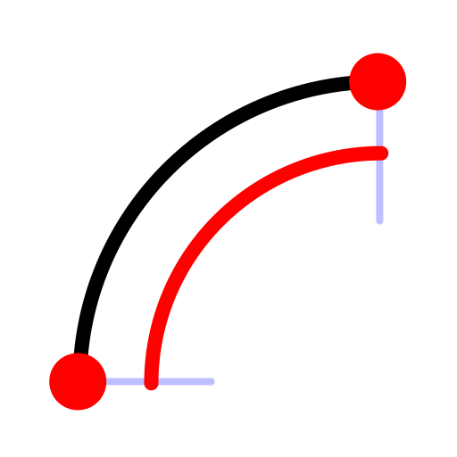

2 Points and Length
Toolbar / Icon:


Menu: Draw > Arc > 2 Points and Length
Shortcut: A, L
Commands: arclength | al
Description:
Draws an arc using the start point, end point and the arc length.
Procedure:
- Type the arc length into the options tool bar and choose the arc
direction (clockwise or counter-clockwise).
- Specify the start point of the arc.
- Specify the end point of the arc. If the end point is too far away from
the start point for a solution, nothing is drawn.